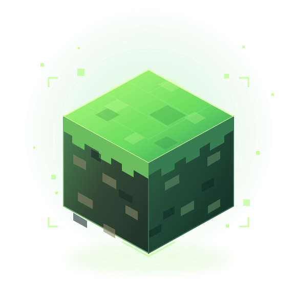

01 / CAPTURE
Seu mundo é salvo
O Altare cria uma cópia dos arquivos do servidor, incluindo o mundo e suas configurações.
ALTARE SERVERCada bloco tem uma história. Proteja seu mundo Minecraft com uma rotina de backups semanais, armazenamento no Google Drive e versões anteriores para recuperação.

Uma automação simples trabalhando nos bastidores, para você se concentrar no que importa: jogar.
O Altare cria uma cópia dos arquivos do servidor, incluindo o mundo e suas configurações.
ALTARE SERVERGitHub Actions executa a rotina com Rclone e envia o backup para seu Google Drive.
GITHUB + RCLONEAs quatro cópias mais recentes são mantidas. As mais antigas saem da rotação automaticamente.
RETENÇÃO DE 4 BACKUPSUma nova cópia entra na coleção a cada domingo. Quando a quinta chega, a mais antiga é removida, mantendo o Drive organizado.